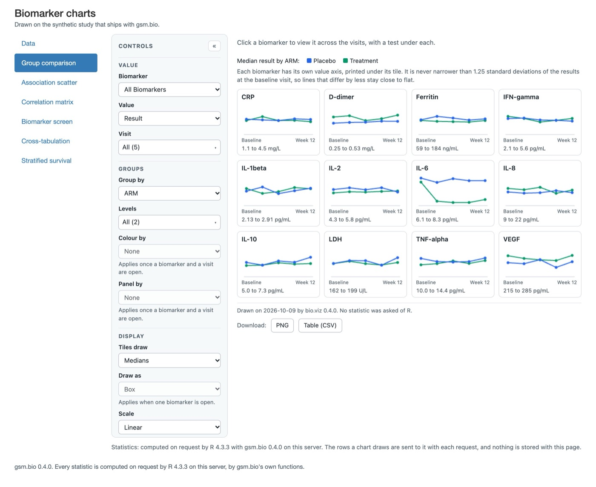
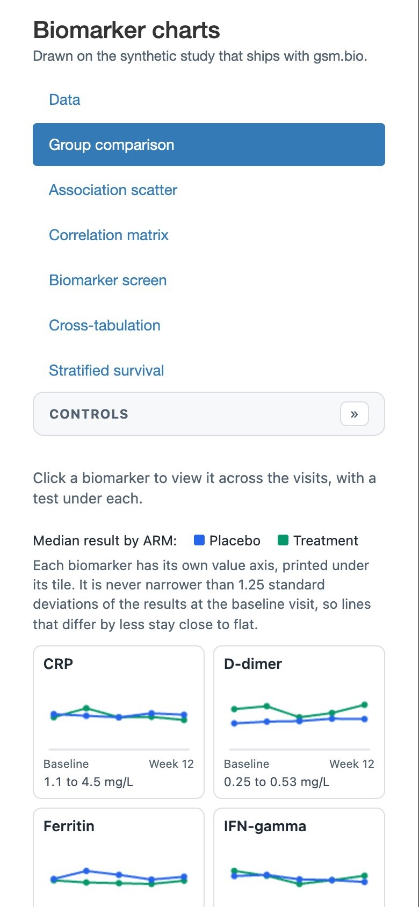
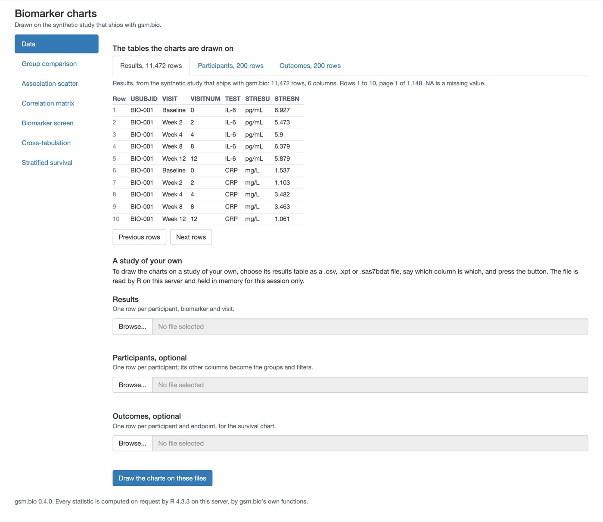
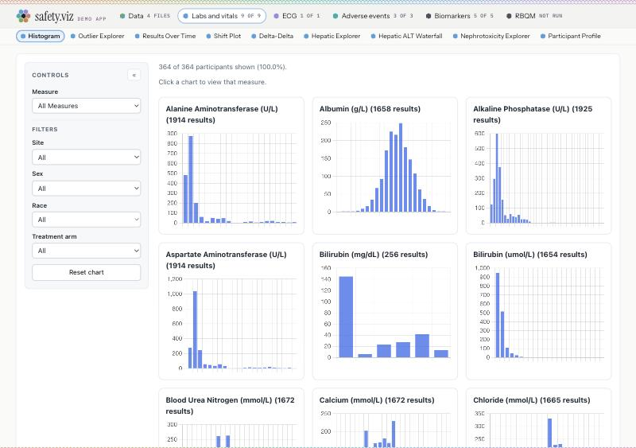
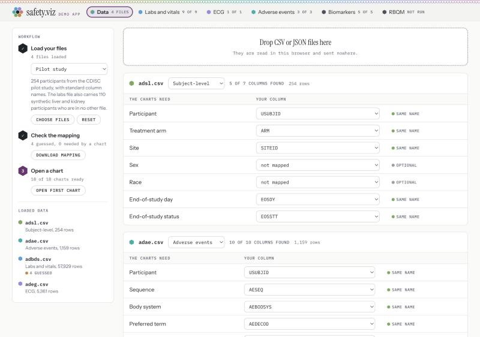
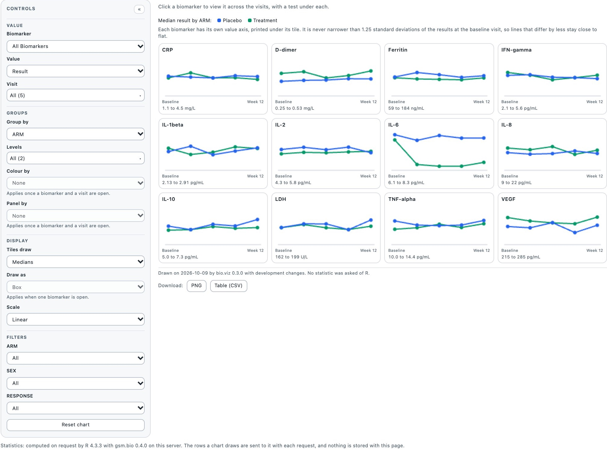
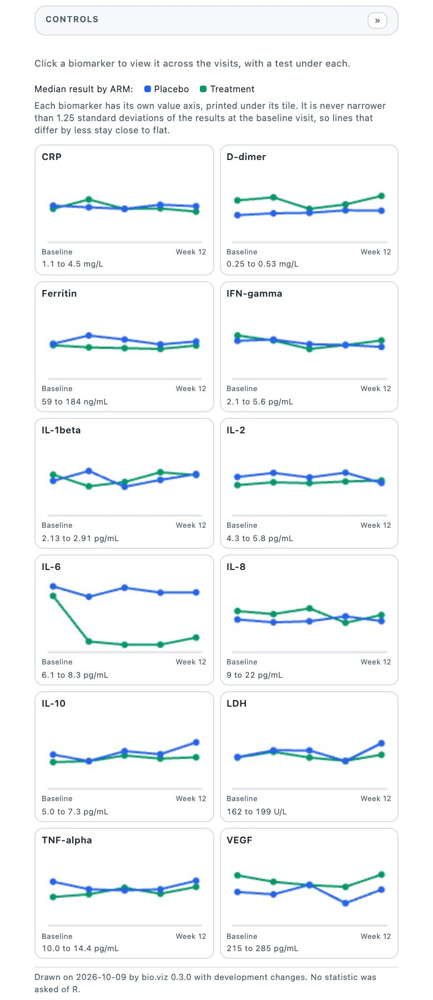
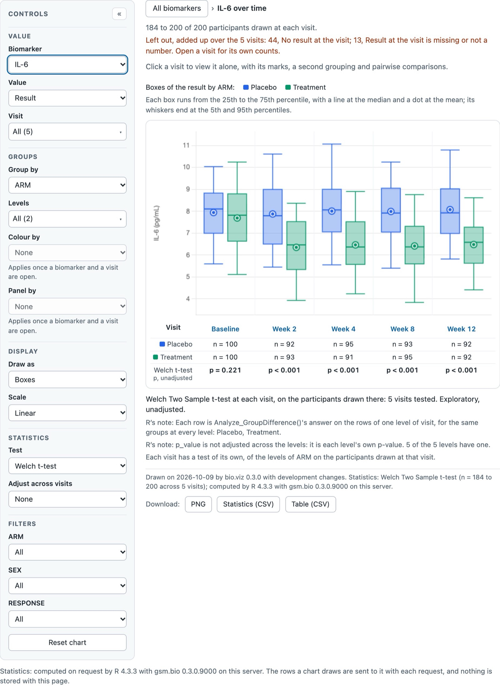
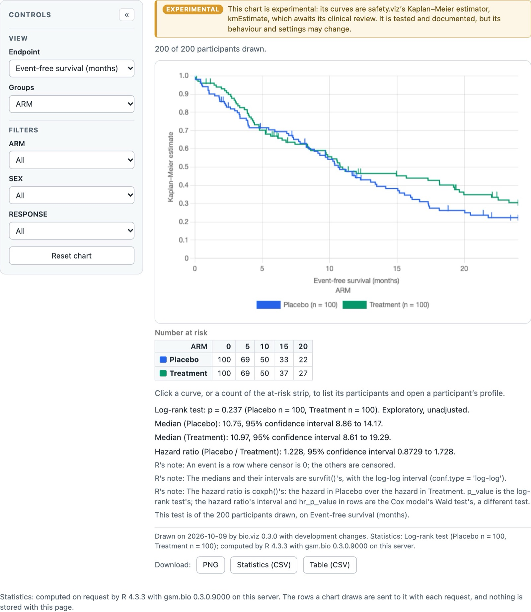

gsm.bio the app's shell and Data page design options 2026-10-08
The biomarker app: three shells and a Data page
Today the six biomarker charts sit in a default Shiny page: a blue list on the left, Bootstrap's grey file boxes, no header, no footer worth the name. This page puts three honest alternatives beside each other, each drawn at desktop and phone width with a real chart in place, each with its Data page in the three states it has to handle, and says what each costs to build. Nothing here is built; nothing under gsm.bio, bio.viz or safety.viz was changed.
3 shells, A to Ceach at 1280px and 390pxData page in 3 states each8 decisions with a pickchart stills taken from the running app
For the requirement to give the biomarker app a designed header, navigation and Data page (obot.roadmap #400). gsm.bio v0.4.0 releases the app as it looks today; whichever option is picked here is built for the release after it.
The short version
A
A sibling of the safety.viz demo app: light header, a row of pills for Data and the six charts, the Data page as a three-step rail beside file cards. Cheapest, proven, reads as the same product.
B
A workbench: a dark espresso rail from bio.viz's own site holds the name, a study card and the chart list with one-line descriptions; the chart gets the rest. Most distinctive; costs the chart about 260px.
C
Chart first: a thin bar with a chart switcher and a study chip; Data opens as a drawer over the chart in three steps. Most room for the chart; the biggest change to the tests.
Pick
A, with B's one-line chart descriptions carried into A's pills as hover text, and the header study chip from both. Build the header, pills and footer first; the Data page second.
1 · TODAY
What reads as ad hoc Shiny
The charts are fine. The page around them is Shiny's default page, and a reader who has used the safety.viz demo app or any product site will see it in the first second.

Today at desktop width, as the app opens. Taken from the app running on this machine.

Today at 390px, the first screen.

Today’s Data page at desktop width, as it opens.
No header. A 22px title and a grey sentence float in the corner. There is no band, no mark, no name a reader would repeat, and nothing that says which study is loaded until they read the small print.
Bootstrap 3's blue stacked list. The active item is a solid blue block with 12px margins between items; it is the look of every Shiny tutorial since 2014, and it is the one element on the page that is not in the charts' visual family (the charts use a soft grey panel, 1px rules and a 6px radius).
The list and the chart share one grid with nothing between them. The chart's own Controls panel starts flush against the list, so a reader sees two columns of controls side by side and has to work out which belongs to what.
The Data page is a form. Three grey Browse boxes with a blue progress bar each, headings in three sizes, and the column questions as a flex row of selects. The thing it is for, "which column is which", has no visual grammar: a guessed column and an unsaid one look the same until you read the words.
Nothing persists. The source line is a sentence under the title; the "computed by R" line is a footer that scrolls away. Both are facts a reader should be able to find from any chart without scrolling.
On a phone the list wins. Seven items stacked one under another take the top half of the first screen; the chart's own collapsed Controls bar sits under them, and the first tile starts two thirds of the way down.
2 · WHAT STAYS FIXED
What every option has to respect
The chart is the chart. Each of the six is a bio.viz widget with its own Controls panel, title, footnotes, statistics line and downloads. The shell wraps it and never redraws a control as a Shiny input or restyles anything inside it. A chart wants about 1000px at desktop width and has to work at 390px, where its own Controls panel collapses to a bar.
One Shiny app, one app.R, Posit Connect. Shiny is the only interface dependency, and it is suggested, not imported; the package's imports cannot grow. HTML and CSS written with shiny's own tags cost nothing. A new package such as bslib is possible but is a new Suggests entry and a larger Connect manifest; every option below says whether it needs one, and none does.
Two facts stay visible. Which R computed the statistics, and that loaded files live in this session's memory and nowhere else.
390px, no sideways scroll, keyboard. Shiny's tab links are real anchors, so a shell that keeps them keeps keyboard navigation for free.
The browser tests find things by id. The source line, the table viewer, the file inputs, the column selects, the Draw button and the tab links. Each option says which it keeps.
Public or synthetic data only. Every mockup uses the synthetic study's real names and counts: 200 participants, 11,472 results, 12 biomarkers, 5 visits, and made-up file names such as lb.xpt and dm.csv.
The app this one should look related to
The program already has one professional web app with a header, a chart list and a data page: the safety.viz demo app. Its header is a light band with a serif name and a row of pills, one per data domain, each carrying a count; the charts of a domain are a second row of pills. Its Data page is a three-step rail on the left (load files, check the mapping, open a chart) with the loaded files listed under it, and on the right a drop zone and one card per file showing what the charts need against what the file calls it, with a small tag per row: same name, guessed, optional.

The safety.viz demo app, a chart open. Captured from the live dev site at 1280px.

Its Data page: the workflow rail, the drop zone, one mapping card per file.
Its type and colour come from the same stylesheet as bio.viz's own site: an espresso band, warm paper, orange for the accent, a serif for names and headings. Both families are on the table below: option A borrows the demo app's light header, option B borrows the site's espresso band. The mockups on this page use system fonts because the page loads nothing from outside; the real app would ask for the family's web fonts and fall back to the system ones where a server cannot reach them.
3 · THE OPTIONS
Three shells, honestly different
Each option is drawn at 1280px with a chart in place and at 390px, then its Data page in three states: as it opens on the synthetic study; a results file chosen with two columns still to say, an outcomes file R could not read, and the button pressed once; and applied on the reader's files with no outcomes table. The chart in every desktop frame is a still of the real chart element, captured from the running app and scaled to the room the shell gives it; the phone frames use a still of the real chart at 390px with its Controls collapsed.
Option A · A sibling of the safety.viz demo app
One light header band carries the name, a row of pills (Data first, then the six charts) and a study chip on the right that always says what the charts are drawn on. The chart sits in a white card under it and gets the full width. On a phone the pills scroll sideways under the name, like the demo app's.
Biomarker charts GSM.BIO 0.4.0
Data 3 TABLESGroup comparisonAssociation scatterCorrelation matrixBiomarker screenCross-tabulationStratified survival
Synthetic study 200 PARTICIPANTS · 3 TABLES

Every statistic is computed on request by R 4.3.3 with gsm.bio 0.4.0 on this server. Files you load are held in this session's memory and nowhere else.
A at 1280px. The chart card is 1240px wide, 300px more than today, because the list no longer takes a column. The study chip is the source line, moved up and made persistent; pressing it opens Data.
Biomarker charts GSM.BIO
Data 3Group comparisonAssociation scatterCorrelation

A at 390px. Two rows of header, then the chart with its own collapsed Controls bar. The pills scroll sideways; the active one is always brought into view.
What the shell is made of
The header is a div of shiny tags above a tab set of type pills, restyled by about sixty lines of CSS. The pills are Shiny's own tab links, so they stay anchors, keep keyboard focus and keep the data-value the tests click.
The study chip is the existing source output, moved into the header and wrapped in a link to the Data tab.
The footer is the existing footer sentence plus the session sentence, in one line.
No new package. The only JavaScript is six lines that scroll the active pill into view on a phone.
A's Data page: as it opens on the synthetic study
A three-step rail on the left, exactly the demo app's grammar: choose files, say which column is which, draw the charts. The right side shows what the charts are drawn on now, ten rows a page, then one card per table the reader can load.
Biomarker charts GSM.BIO 0.4.0
Data 3 TABLESGroup comparisonAssociation scatterCorrelation matrixBiomarker screenCross-tabulationStratified survival
Synthetic study 200 PARTICIPANTS · 3 TABLES
Workflow
✓
Choose files
none chosen: the synthetic study
The charts open on the study that ships with gsm.bio: 200 participants, 12 biomarkers, 5 visits. Choose a results file to draw them on a study of your own.
Choose files
✓
Say which column is which
nothing to say: gsm.bio's own names
3
Draw the charts
6 of 6 charts ready
Open group comparison
Drawn on
Results11,472 rows · 6 columns
Participants200 rows · 6 columns
Outcomes200 rows · 5 columns
A file you choose is read by R on this server and held in this session's memory only. Nothing is kept when the session ends.
The tables the charts are drawn onthe synthetic study that ships with gsm.bio
Previous rowsNext rowsRows 1 to 10 of 11,472 · page 1 of 1,148 · NA is a missing value
Resultsneededone row per participant, biomarker and visit · .csv, .xpt or .sas7bdat
Choose the results file
Read by R on this server; held for this session only.
Participantsoptionalone row per participant; its other columns become the groups and filters
Choose a file
Outcomesoptionalone row per participant and endpoint, for the survival chart
Choose a file
Draw the charts on these files
A's Data page as it opens. The viewer is the existing viewer with its tabs; the file slots are the existing file inputs, restyled as cards with the choose control drawn as a drop zone. The Draw button keeps its id.
A's Data page: a file chosen, two columns to say, one file R could not read, the button pressed once
Biomarker charts GSM.BIO 0.4.0
Data 3 TABLESGroup comparisonAssociation scatterCorrelation matrixBiomarker screenCross-tabulationStratified survival
Synthetic study 200 PARTICIPANTS · 3 TABLES
Workflow
✓
Choose files
lb.xpt, dm.csv · 1 not read
notes.xlsx could not be read; the charts can be drawn without an outcomes table.
Choose files
2
Say which column is which
2 of 6 columns still to say
Participant and biomarker in lb.xpt.
3
Draw the charts
waiting on step 2
Drawn on, still
Results11,472 rows · synthetic
Participants200 rows · synthetic
Outcomes200 rows · synthetic
The charts stay on these tables until every column is said and the button is pressed.
The tables the charts are drawn on now: the synthetic study · Results 11,472 · Participants 200 · Outcomes 200Browse rows
lb.xptresults11,472 rows · 6 columns · read by R as a .xpt file4 of 6 columns said
ParticipantNot said yet▾say whichBiomarkerNot said yet▾say whichResult, a numberSTRESN▾same nameVisitVISIT▾same nameVisit order, a numberVISITNUM▾same name
The first 5 rows of lb.xpt, as R read them
Row
SUBJID
VISIT
VISITNUM
LBTEST
STRESU
STRESN
1
BIO-001
Baseline
0
IL-6
pg/mL
6.927
2
BIO-001
Week 2
2
IL-6
pg/mL
5.473
3
BIO-001
Week 4
4
IL-6
pg/mL
5.9
4
BIO-001
Week 8
8
IL-6
pg/mL
6.379
5
BIO-001
Week 12
12
IL-6
pg/mL
5.879
dm.csvparticipants200 rows · 6 columns · read by R as a .csv file1 of 1 columns said
ParticipantUSUBJID▾same name
Its other columns become the groups and filters: ARM, SEX, AGE, RESPONSE, COUNTRY.
notes.xlsxoutcomesChoose another file
The app reads .csv, .xpt, .sas7bdat files, and notes.xlsx is none of them.
Draw the charts on these filesSay which column of lb.xpt is each of these, and the charts can be drawn: participant, biomarker.
The two unsaid columns are amber in the card and counted in the rail; the sentence R could not read a file sits in that file's card; the refusal after the button sits beside the button, which is where the eye is. The viewer folds to one line while files are being chosen, so the cards start higher.
A's Data page: applied on the reader's files, with no outcomes table
Biomarker charts GSM.BIO 0.4.0
Data 2 TABLESGroup comparisonAssociation scatterCorrelation matrixBiomarker screenCross-tabulationStratified survival
lb.xpt, dm.csv THIS SESSION
Workflow
✓
Choose files
lb.xpt, dm.csv
Choose other files
✓
Say which column is which
6 of 6 columns said
✓
Draw the charts
5 of 6 charts ready
Stratified survival needs an outcomes table; its place holds a sentence saying so.
Open group comparison
Drawn on
Resultslb.xpt · 11,472 rows
Participantsdm.csv · 200 rows
Outcomesnone
Held in this session's memory only. A reader who comes back chooses the files again.
The charts are drawn on lb.xpt, dm.csv, loaded in this session. Choose a chart from the list.
The tables the charts are drawn onlb.xpt, dm.csv, loaded in this session
Results · 11,472 rowsParticipants · 200 rows
Two columns were renamed to gsm.bio's names: USUBJID was SUBJID, TEST was LBTEST.
Row
USUBJID
VISIT
VISITNUM
TEST
STRESU
STRESN
1
BIO-001
Baseline
0
IL-6
pg/mL
6.927
2
BIO-001
Week 2
2
IL-6
pg/mL
5.473
3
BIO-001
Week 4
4
IL-6
pg/mL
5.9
4
BIO-001
Week 8
8
IL-6
pg/mL
6.379
5
BIO-001
Week 12
12
IL-6
pg/mL
5.879
Previous rowsNext rowsRows 1 to 10 of 11,472 · page 1 of 1,148 (five shown here)
Files: lb.xpt (results, 6 of 6 columns said) · dm.csv (participants) · no outcomes fileChoose other files
Applied. The study chip in the header changes to the file names, the survival pill dims, and the rail's third step says which chart is missing and why. The confirmation sentence is the existing one.
Better than the others
Reads as the same product as the safety.viz demo app, and a reader who knows one knows the other.
The chart gets the full width at every size; nothing competes with its own Controls panel.
The Data page's grammar (rail, cards, tags) is already proven on the demo app and already matches the tables this app loads.
The cheapest to build and the one that keeps every test id.
Worse than the others
Seven pills in one row is the most the header will take; a seventh chart would need a second row or a grouped pill.
The charts have no descriptions on the way in; a first-time reader learns what "Cross-tabulation" draws by opening it (B carries a line per chart).
Less distinctive than B; it is deliberately not a brand of its own.
What it costs
Shiny: a tab set of type pills in place of the stacked list; a header div with the source output inside a link; the existing file inputs and selects, restyled; about 200 lines of CSS in the page's style block, with the family's tokens copied from the site stylesheet.
New packages: none.
Tests: every id stays, including the tab links the tests click, the source output, the viewer, the file inputs, the column selects and the Draw button. Tests that read the layout of the stacked list, if any, would change.
Effort: the shell in a day; the Data page in two.
Option B · A workbench with bio.viz's espresso rail
The chart list stays on the left, but becomes the product's spine: a dark band in the colour of bio.viz's own site header, holding the name, a card for the study that is loaded, the six charts grouped by the question each answers with a line of description under each, and the two standing facts at the bottom. Data is not a seventh item in the list; it is the study card, which opens the study page.
Biomarker chartsGSM.BIO 0.4.0
Study
The synthetic study that ships with gsm.bio 200 participants · 12 biomarkers · 5 visits · 3 tables Change data →
Compare
Group comparisonone biomarker between groups, over the visits
Cross-tabulationtwo categories, with a cut on a biomarker
Relate
Association scattertwo variables, one point per participant
Correlation matrixevery pair of biomarkers at one visit
Screen
Biomarker screenevery biomarker on one comparison
Outcomes
Stratified survivalhigh against low, with a Kaplan–Meier curve
Statistics by R 4.3.3 with gsm.bio 0.4.0 on this server. Files you load stay in this session's memory and nowhere else.
Group comparison
IL-6 over time · drawn on the synthetic study

B at 1280px, with the group comparison opened on IL-6 over time. The rail is 264px; the chart card is 970px, 30px more than today. The title row above the chart is the shell's, not the chart's; the chart's own title and footnotes stay inside the card.
B at 390px. The rail folds into a top band with the name and the chart list as a drop-down, and a one-line study strip under it. The chart starts 90px from the top.
What the shell is made of
The existing stacked list, kept as it is and restyled: the grouping labels and descriptions are added to the tab titles as tags, the band is CSS. The tab links stay anchors with their data-value.
The study card is the existing source output with the counts added, inside a link to the Data tab; the Data tab's own link is hidden from the list and reached through the card.
The phone drop-down is a select that drives the tab set, which is a Shiny input, but an input of the shell, not of a chart. It is the one piece of this option that has to be written in R rather than CSS.
No new package.
B's Data page: the study page, as it opens
Under B the Data page is where the study card leads: three table cards saying what is loaded, a stepped flow for loading a study of your own, one step shown at a time, and a peek at the rows of each table.
Biomarker chartsGSM.BIO 0.4.0
Study
The synthetic study that ships with gsm.bio 200 participants · 12 biomarkers · 5 visits · 3 tables
Compare
Group comparisonone biomarker between groups, over the visits
Cross-tabulationtwo categories, with a cut on a biomarker
Relate
Association scattertwo variables, one point per participant
Correlation matrixevery pair of biomarkers at one visit
Screen
Biomarker screenevery biomarker on one comparison
Outcomes
Stratified survivalhigh against low, with a Kaplan–Meier curve
Statistics by R 4.3.3 with gsm.bio 0.4.0 on this server. Files you load stay in this session's memory and nowhere else.
Study
the synthetic study that ships with gsm.bio
Results
11,472 rows
6 columns · one row per participant, biomarker and visit
Participants
200 rows
6 columns · groups and filters: ARM, SEX, AGE, RESPONSE, COUNTRY
Outcomes
200 rows
5 columns · one endpoint, for the survival chart
A study of your ownread by R on this server, held in this session's memory only
1Choose files
2Say which column is which
3Review and draw
Results
needed · .csv, .xpt or .sas7bdat
Participants
optional
Outcomes
optional
Next: say which column is whichOr keep the synthetic study and open a chart from the rail.
Previous rowsNext rowsRows 1 to 5 of 11,472 · five rows a page here, with the table folded under the loading flow
B's study page as it opens. The three table cards are new; the stepped flow is new; the viewer underneath is the existing one with five rows a page instead of ten, so the flow stays above the fold.
B's Data page: step 2, two columns to say, one file not read, the Review step pressed once
Biomarker chartsGSM.BIO 0.4.0
Study
The synthetic study that ships with gsm.bio 200 participants · 12 biomarkers · 5 visits · 3 tables Loading lb.xpt, dm.csv · step 2 of 3
Compare
Group comparisonone biomarker between groups, over the visits
Cross-tabulationtwo categories, with a cut on a biomarker
Relate
Association scattertwo variables, one point per participant
Correlation matrixevery pair of biomarkers at one visit
Screen
Biomarker screenevery biomarker on one comparison
Outcomes
Stratified survivalhigh against low, with a Kaplan–Meier curve
Statistics by R 4.3.3 with gsm.bio 0.4.0 on this server. Files you load stay in this session's memory and nowhere else.
Study
still the synthetic study, until step 3
A study of your ownlb.xpt, dm.csv chosen · notes.xlsx not read
✓Choose files
2Say which column is which
3Review and draw
The app reads .csv, .xpt, .sas7bdat files, and notes.xlsx is none of them. Go back to step 1 to choose another outcomes file, or go on without one: the survival chart will say it has no outcomes table.
lb.xptresults11,472 rows · 6 columns
ParticipantNot said yet▾say whichBiomarkerNot said yet▾say whichResult, a numberSTRESN▾same nameVisitVISIT▾same nameVisit order, a numberVISITNUM▾same name
The first 5 rows of lb.xpt, as R read them
Row
SUBJID
VISIT
VISITNUM
LBTEST
STRESU
STRESN
1
BIO-001
Baseline
0
IL-6
pg/mL
6.927
2
BIO-001
Week 2
2
IL-6
pg/mL
5.473
3
BIO-001
Week 4
4
IL-6
pg/mL
5.9
dm.csvparticipants200 rows · 6 columns
ParticipantUSUBJID▾same name
Its other columns become the groups and filters: ARM, SEX, AGE, RESPONSE, COUNTRY.
The first 3 rows of dm.csv
Row
USUBJID
ARM
SEX
AGE
RESPONSE
1
BIO-001
Placebo
F
54
Responder
2
BIO-002
Treatment
M
61
Non-responder
3
BIO-003
Treatment
F
47
Responder
← Choose filesNext: review and drawSay which column of lb.xpt is each of these, and the charts can be drawn: participant, biomarker.
Step 2 under B. The unreadable file is reported at the top of the step because it belongs to step 1; the two unsaid columns are amber; pressing Next with them unsaid produces the refusal beside the button, the same sentence the app says today. The charts stay on the synthetic study and the rail says so.
B's Data page: applied, no outcomes table
Biomarker chartsGSM.BIO 0.4.0
Study
lb.xpt, dm.csv, loaded in this session 200 participants · 12 biomarkers · 5 visits · 2 tables
Compare
Group comparisonone biomarker between groups, over the visits
Cross-tabulationtwo categories, with a cut on a biomarker
Relate
Association scattertwo variables, one point per participant
Correlation matrixevery pair of biomarkers at one visit
Screen
Biomarker screenevery biomarker on one comparison
Outcomes
Stratified survivalneeds an outcomes table; none is loaded
Statistics by R 4.3.3 with gsm.bio 0.4.0 on this server. Files you load stay in this session's memory and nowhere else.
Study
lb.xpt, dm.csv, loaded in this session
The charts are drawn on lb.xpt, dm.csv, loaded in this session. Choose a chart from the rail.
Results · lb.xpt
11,472 rows
6 columns · USUBJID was SUBJID, TEST was LBTEST
Participants · dm.csv
200 rows
6 columns · groups and filters: ARM, SEX, AGE, RESPONSE, COUNTRY
Outcomes
none
The stratified survival chart's place holds a sentence saying it reads an outcomes table and this app has none.
A study of your owndone · 6 of 6 columns saidLoad other files
✓Choose files
✓Say which column is which
✓Review and draw
Results · 11,472 rowsParticipants · 200 rows
Row
USUBJID
VISIT
VISITNUM
TEST
STRESU
STRESN
1
BIO-001
Baseline
0
IL-6
pg/mL
6.927
2
BIO-001
Week 2
2
IL-6
pg/mL
5.473
3
BIO-001
Week 4
4
IL-6
pg/mL
5.9
Previous rowsNext rowsRows 1 to 5 of 11,472 (three shown here)
Applied under B. The study card in the rail now names the files, the survival item dims with its reason, and the missing outcomes table is a dashed card that carries the sentence the chart's place will show.
Better than the others
The most distinctive of the three and the closest to bio.viz's own site, so the app and the chart gallery read as one thing.
The rail teaches: a line under each chart says what it draws, and the grouping (compare, relate, screen, outcomes) is the mental model of the six.
The study card makes the data a first-class object, not a tab among charts, and it is where a reader's eye goes when something is missing.
The stepped flow cannot be pressed out of order: there is no refusal to read if the reader follows the steps.
Worse than the others
The chart loses 264px at desktop width to a rail that is mostly navigation; on a 1280px laptop the chart gets 970px, just under what it wants.
Two dark panels at once: the rail and the chart's own grey Controls panel sit side by side again, as today, and the rail has to be clearly the darker and the quieter of the two.
The phone band needs a select that drives the tab set, which is R code, not CSS; and a stepped flow has state to keep in R where today's one page has none.
Three steps for what is, on most files, one press.
What it costs
Shiny: the stacked list kept and restyled, with the group labels and descriptions as tags in the tab titles; the study card as the source output with counts; a select in the phone band that updates the tab set; the stepped flow as a conditional panel per step with a step value held in the session; about 300 lines of CSS.
New packages: none.
Tests: the tab links, the source output, the viewer, the file inputs, the column selects and the Draw button keep their ids. Tests that choose files and press Draw in one go would have to step through the flow first, and a test of the Data tab link would reach it through the study card.
Effort: the shell in two days; the study page and its flow in three.
Option C · Chart first, Data as a drawer
No list. A thin white bar holds the name, a segmented switcher for the six charts and, on the right, a study chip that says what is loaded. The chart gets everything under the bar. Data is not a page: the chip opens a drawer over the chart, with a three-step flow inside it, and the chart is still there, dimmed, when the drawer closes.
Biomarker chartsGSM.BIO 0.4.0
Group comparisonAssociation scatterCorrelation matrixBiomarker screenCross-tabulationStratified survival
Synthetic study 3 TABLESData

Every statistic is computed on request by R 4.3.3 with gsm.bio 0.4.0 on this server. Files you load are held in this session's memory and nowhere else.
C at 1280px, with the stratified survival chart open. The chart's own experimental banner is inside the card, untouched; the shell adds nothing above it but the bar. The chart card is 1240px wide.
Biomarker charts
Group comparison▾Data 3
C at 390px. The segmented switcher becomes a select; the study chip becomes the Data button. The chart starts 100px from the top.
What the shell is made of
A tab set of type hidden holds the six charts; the segmented switcher is a radio group styled as segments on desktop and a select on a phone, each a Shiny input of the shell that updates the tab set.
The drawer is a div that a few lines of JavaScript show and hide; the existing Data view sits inside it unchanged. Shiny draws an output only when it is visible, so opening the drawer draws the viewer then, which is what today's tab does.
The source output becomes the chip's text.
No new package, but the most JavaScript of the three: about forty lines for the drawer, the escape key and focus.
C's drawer: as it opens on the synthetic study
Biomarker chartsGSM.BIO 0.4.0
Group comparisonAssociation scatterCorrelation matrixBiomarker screenCross-tabulationStratified survival
PreviousNextRows 1 to 5 of 11,472 · the synthetic study that ships with gsm.bio
A study of your own
1Choose files
2Say columns
3Draw
Results
needed · .csv, .xpt or .sas7bdat
Participants, optionalOutcomes, optional
Read by R on this server and held in this session's memory only.
C's drawer as it opens: what is drawn now at the top, five rows a page because the drawer is 560px wide, and the three-step flow under it. The chart stays visible to the left.
C's drawer: step 2 on a phone, two columns to say, one file not read, Draw pressed once
Biomarker charts
Data×
✓Files
2Columns
3Draw
The app reads .csv, .xpt, .sas7bdat files, and notes.xlsx is none of them.
lb.xpt11,472 rows · 6 columns
Participant say whichNot said yet▾Biomarker say whichNot said yet▾Result, a number same nameSTRESN▾Visit same nameVISIT▾Visit order, a number same nameVISITNUM▾
dm.csv200 rows · Participant: USUBJIDsame name
Draw the charts on these files
Say which column of lb.xpt is each of these, and the charts can be drawn: participant, biomarker.
On a phone the drawer is the whole screen. The unreadable file is reported at the top of the step; the two unsaid columns are amber; the refusal sits under the button.
Biomarker charts
Data×
The charts are drawn on lb.xpt, dm.csv, loaded in this session.
✓Files
✓Columns
✓Draw
Drawn on now
Results · 11,472Participants · 200
Row
USUBJID
VISIT
TEST
STRESN
1
BIO-001
Baseline
IL-6
6.927
2
BIO-001
Week 2
IL-6
5.473
3
BIO-001
Week 4
IL-6
5.9
No outcomes table: the stratified survival chart's place holds a sentence saying so.
Close and open a chartLoad other files
Applied, on a phone. The chip in the bar now reads lb.xpt, dm.csv; the drawer offers to close.
Better than the others
The chart gets the most room of the three at every width, and nothing on screen competes with its own Controls panel.
Loading data does not take the reader away from the chart they were looking at; when the drawer closes the same chart is drawn on the new tables.
The thinnest chrome, and the easiest to keep thin when charts are added: the switcher grows, nothing else does.
Worse than the others
Six chart names in a segmented control is already tight at 1280px; the names would have to shorten or the control would have to scroll.
A drawer is the wrong shape for a table viewer: five rows, five columns, and a reader who wants to browse 11,472 rows is in a 560px strip.
The drawer and the switcher are both Shiny inputs and JavaScript that this app does not have today; it is the option with the most new moving parts and the least precedent in the program.
The Data tab link the tests click goes away; a button takes its place.
What it costs
Shiny: a tab set of type hidden, a radio group and a select that update it, a drawer div toggled by about forty lines of JavaScript with a resize signal so Shiny draws the viewer when it appears, the stepped flow as under B; about 250 lines of CSS.
New packages: none.
Tests: the source output, the viewer, the file inputs, the column selects and the Draw button keep their ids; the Data tab link becomes a button with a new id, the chart tab links become radio values, and every test that opens Data or a chart changes how it does so.
Effort: the shell in two days; the drawer and its flow in three; the test changes a day on top.
4 · DECISIONS INSIDE THE OPTIONS
Eight calls that can be made separately
Each option bundles answers to these. They can be unbundled: pick a shell, then override any of these.
D1 · THE NAME IN THE HEADER
What is the app called?
"gsm.bio", the package name, as bio.viz's site does.
"Biomarker charts", what the page is called today and what Connect's listing will show.
Both: "Biomarker charts" as the name, "gsm.bio 0.4.0" as the small mark beside it.
Pick: both. A reader names the thing, a maintainer names the package; the version beside the name is the family's habit and it is the version a bug report needs.
D2 · THE SOURCE LINE
Is "drawn on …" a persistent header element or a line on the Data page?
Persistent: a chip in the header that every chart shows, which also opens Data.
On the Data page only, as today's sentence under the title.
Pick: persistent. The one question a reader asks of any chart is "on what data", and after a load the chip is the proof the load took.
D3 · DATA: PAGE OR DRAWER
Is Data a page among the charts or a drawer over them?
A page (A and B): room for the viewer, keeps the tab link, nothing new to script.
A drawer (C): the chart stays in view; narrow; new JavaScript; the tests change.
Pick: a page. The viewer needs the width, and the app's one piece of JavaScript today is the charts'. A drawer can be added later if readers switch studies often, which nothing so far suggests.
D4 · THE LOADING FLOW
Steps the reader walks, or one page with a numbered rail?
Stepped (B, C): one step on screen at a time, Next buttons, state kept in R.
One page with a rail (A): the steps are labels that count what is left; everything is on screen; the button refuses with a sentence when something is unsaid, as today.
Pick: one page with a rail. On most files the names match and the whole job is one press; a wizard makes that three. The rail gives the orientation a wizard gives without hiding anything.
D5 · WHERE A REFUSAL GOES
When the button is pressed with a column unsaid, where does the sentence go?
Beside the button, as a tinted block.
A banner at the top of the page.
Only the amber marks on the selects, no sentence.
Pick: beside the button and amber on the selects. The eye is on the button when it refuses; the amber says which rows to go back to; the rail's count says how many. The sentence stays the one R says today, so the tests that read it still read it.
D6 · WHERE A FILE R COULD NOT READ IS REPORTED
In the file's own card, or at the top of the page?
In the card of the slot it was chosen for, with a button to choose another.
At the top of the page or step, as a banner.
Pick: in the card. The reader chose it there; the fix is there. The rail's first step repeats the count so it is not missed when the page is long.
D7 · THE TWO STANDING FACTS
Where do "computed by R …" and "held for this session only" live?
A one-line footer under every page, both facts in one sentence each.
In the header, as hover text on the version mark.
On the Data page only.
Pick: the footer, on every page, in one line; the chart's own statistics line already names the R under each chart, and the Data page repeats the session fact next to the file slots where it matters most.
D8 · FONTS
The family's web fonts, or the system's?
Ask for Instrument Sans and Instrument Serif from Google Fonts as both sites do, with system fonts as the fallback.
System fonts only.
Pick: ask for the family's fonts with the fallback. A Connect server behind a firewall may not reach Google, in which case the page falls back and still holds together; the mockups on this page are the fallback, so they are the worst case.
5 · RECOMMENDATION
Build A, with two things from B
Why A
The program already has a professional web app with a chart list, a data page and a header, and this app is its sibling in every other way: same chart kit, same stylesheet, same R behind the statistics. Making it look like one is the shortest route to "not an ad hoc Shiny app", and the look is already reviewed.
It gives the chart the full width, which is the thing the chart wants most, and it costs no new package, no new JavaScript to speak of, and no change to the ids the browser tests use.
Its Data page grammar (a counting rail, a card per file, same name / say which / optional tags) already fits the three tables and the three states this app has, and it is the one of the three that keeps loading to a single press when the names match.
Carried in from B
The one-line description of each chart, as the hover text on its pill and as the line under the chart's name on the Data page's "which charts are ready" list.
The dimmed pill with a reason when a chart cannot be drawn on the loaded tables, so the survival chart's missing outcomes table is visible before it is opened.
Left out, deliberately
A stepped flow (B, C): one page with a rail does the same orientation without the state.
A drawer (C): nothing yet says readers switch studies often enough to need the chart in view while they do.
A new package: bslib would give the header and pills for less CSS, at the price of a Suggests entry and a larger Connect manifest; the CSS is about 200 lines and the family's tokens already exist.
If yes, in this order
The shell: header band, pills, study chip, footer line, phone behaviour. One pull request, the browser tests unchanged, a before-and-after still at 1280px and 390px in its body.
The Data page: the rail, the viewer card, the file cards with their tags, the refusal and unreadable-file placements. A second pull request, with the three states captured.
Then the carried-in pieces: pill descriptions and the dimmed pill with a reason.
Each step is checked at 390px with no sideways scroll and by keyboard before it is opened, the way every page of the family is.
What this page did not do
Nothing was built or changed in gsm.bio, bio.viz or safety.viz. Every screen above is HTML and CSS of this page around a still of the real chart.
The desktop chart stills were captured from the chart element alone, from the app running on this machine, and are scaled to the width each shell gives them; a chart given more width would reflow its tiles rather than grow. The phone chart still is a crop of a full-page capture at 390px.
The mockups use system fonts; the real shell would ask for the family's web fonts first.